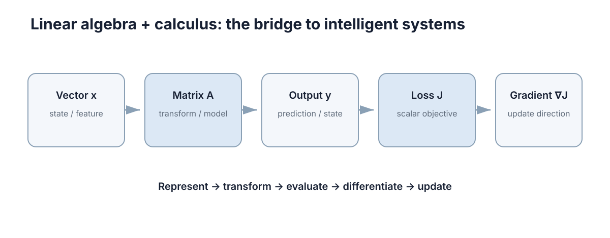

Linear Algebra & Calculus
这一章的四件事你在生活里都干过：把好几个数绑在一起看、量”差了多少”、按同一套规则同时改好几个数、以及”只挪一点点，结果会变多少”。读完你应该能自己推出三件事——为什么工程上几乎不”解方程”而是”求最近似解”、为什么残差必须垂直于模型的列空间、以及为什么”步长越小越准”一定会在某个地方反转。

后面的控制理论、机器人学、SLAM、优化和强化学习，用的是同一套骨架：用向量表示状态、用矩阵表示映射、用导数表示”在工作点附近近似成线性”。所以这一章不追求课程式的完备证明，只带着你把每个工具为什么被迫存在推一遍。读的时候随时问自己一句：眼前这个对象是标量、向量，还是一个映射？
一、你早就在用向量，只是没这么叫
车载导航报位置时你不会说”横着是 3，另外竖着是 4”，你会说”我在 (3,4)“。因为这两个数必须一起看：单独说”3”没有任何意义，它可以是任何一条线上的任何一点。当你把几个数写成一个整体、并且只允许整组一起参与运算时，你就造出了一个向量（vector）。这里的”几个数”的个数，就叫维数（dimension）。
三个动作你天生就会：
- 叠加：起点 \((3,4)\)，又往 \((1,-2)\) 走了一段 → 新位置 \((3+1,\,4-2)=(4,2)\)。这就是向量加法。
- 按比例缩放：速度只取一半，位移向量就整体乘 \(0.5\) → \((6,8)\to(3,4)\)。这就是数乘。
- 看”在某个方向上投了多长”：\((3,4)\) 在正东方向 \((1,0)\) 上投了 \(3\)，在正北方向 \((0,1)\) 上投了 \(4\)。这就是内积。
一台差分驱动小车要预测未来，状态里至少要装四个数：位置 \(p_x,p_y\)（m）、线速度 \(v\)（m/s）、航向角 \(\theta\)（rad）：
\[ x=\begin{bmatrix}p_x & p_y & v & \theta\end{bmatrix}^\top . \]
为什么是这四个、不是三个？ 因为判据只有一条：状态必须是预测未来所需的充分信息。给定当前 (x) 和未来的输入 (u)，未来就与更早的历史无关了。反过来说，任何能由 (x) 和 (u) 唯一算出来的量都不该重复塞进状态；否则同一信息被重复表示，会让后面的估计问题出现冗余方向和数值退化。协方差、特征值与正定性的严格含义会分别在本章后半部分和概率章节再定义，这里先只记住“状态不要重复记同一件事”。
这里有个”建模阶段就能省掉调试时间”的点：单位和坐标原点的选择不改变物理，却直接决定同一套算法是否稳定。把位置从绝对坐标改成相对某个参考点，数值尺度可以从 \(10^{5}\) 降到 \(10^{1}\)，条件数与浮点精度都会明显改善；把角度参考轴选在运动主方向上，可以避免 \(\theta\approx\pi\) 附近的角度环绕跳变被误读成”剧烈运动”。
二、误差”有多大”：范数是被逼出来的
现在有了向量，第二件事立刻出现：两组估计都错了，谁错得更狠？
最直接的办法是”把每个分量的差加起来”。看一个误差 \(e=(3,-3)\)：\(3+(-3)=0\)，加起来是零——它看起来完美，实际上两个方向都偏了 3。正负抵消就是这个笨办法的死因。
要救它只有三条路，各修一个毛病，也各留下一类偏差：
| 修法 | 名字 | 定义 | 它的性格 |
|---|---|---|---|
| 先取绝对值再求和 | \(L_1\) 范数 | \(\|x\|_1=\sum_i \|x_i\|\) | 只看总量，不在乎摊在几个方向上 |
| 先平方再求和再开方 | \(L_2\) 范数 | \(\|x\|_2=\sqrt{\sum_i x_i^2}\) | 大误差被平方放大，最怕一个坏点 |
| 只看最大的那个分量 | \(L_\infty\) 范数 | \(\|x\|_\infty=\max_i \|x_i\|\) | 只关心最坏分量，其余全不管 |
这三种”性格差异”不是形容词，是可算的。比较两个候选误差 \(a=(2,2)\) 与 \(b=(3,0)\)：
| 范数 | \(a=(2,2)\) | \(b=(3,0)\) | 选谁 |
|---|---|---|---|
| \(L_1\) | 4 | 3 | 选 \(b\)——它宁可让一个方向错到底，也不接受”处处都错” |
| \(L_2\) | 2.828 | 3 | 选 \(a\)——平方让 \(b\) 的 3 变得更昂贵 |
| \(L_\infty\) | 2 | 3 | 选 \(a\)——只看最坏分量 |
所以选范数等于在回答一个问题：我更怕一个巨大的误差，还是更怕很多个中等误差？ 机器人里位姿误差常用 \(L_2\)（最小二乘的地基）、稀疏残差与鲁棒损失用 \(L_1\)、“不得超过”的安全约束用 \(L_\infty\)。
其中 \(L_2\) 值得单独记一下，它有一个非常好用的平方形式：
\[ \|x\|_2^2=x^\top x=\sum_i x_i^2 . \]
最小二乘之所以叫”二乘”，就是因为它的目标函数写成误差向量的 \(L_2\) 范数平方。这是个二次函数，求导后得到线性方程，因此有闭式解；换成 \(L_1\) 目标就变成线性规划，换成 \(L_\infty\) 变成切比雪夫逼近。
最后把一条约定在动笔前定死：本区统一使用列向量，于是内积写作 \(x^\top y\)（结果是标量），外积写作 \(xy^\top\)（结果是矩阵）。一个 \(n\) 维状态若被当成行向量，所有矩阵乘法都要额外转置，写出的公式看着对称、代入就不对齐。
三、矩阵：同一套规则同时作用在所有分量上
设想你手上有台差速小车，你只能下两条指令：左轮速度 \(v_L\)、右轮速度 \(v_R\)。你真正想要的是车身前进速度 \(v\) 和转向角速度 \(\omega\)。这两者由两条规则给出：
\[ v=\frac{v_L+v_R}{2},\qquad \omega=\frac{v_R-v_L}{L}, \]
其中 \(L=0.3\) m 是轮距。把这两条规则”打包”写成一个作用在指令向量上的对象：
\[ \begin{bmatrix}v\\ \omega\end{bmatrix}= \begin{bmatrix}\tfrac12 & \tfrac12\\ -\tfrac1L & \tfrac1L\end{bmatrix} \begin{bmatrix}v_L\\ v_R\end{bmatrix}. \]
代数字：\(v_L=1.0\)、\(v_R=1.2\)，得 \(v=1.1\) m/s、\(\omega=(1.2-1.0)/0.3=0.667\) rad/s。两条规则、两个输入、两个输出——这个 \(2\times2\) 的数组就是一个矩阵（matrix）；它和向量的差别在于，向量是一次作用的对象，矩阵是一次作用的规则。
列的解释是理解矩阵最快的路。 取输入 \(e_1=(1,0)^\top\)（只开左轮），输出是 \((0.5,\,-1/0.3)=(0.5,-3.333)\)；取 \(e_2=(0,1)^\top\)（只开右轮），输出是 \((0.5,\,+3.333)\)。这两个数就是矩阵的两列。于是”矩阵怎么变换空间”等价于”每一列的像落在哪里”：左轮单独转，车向右偏；右轮单独转，车向左偏——符号刚好相反，而这个符号就写在列里。
为什么矩阵乘法不能交换顺序
这不是形式上的怪癖，是几何事实。拿二维点 \((1,0)\)，比较两种操作顺序，其中 \(R\) 是绕原点转 \(90^\circ\)（把 \((x,y)\) 变成 \((-y,x)\)），\(t\) 是平移 \((1,0)\)：
- 先转后移：\(R(1,0)=(0,1)\)，再平移 → \((1,1)\)；
- 先移后转：\((1,0)+(1,0)=(2,0)\)，再旋转 → \((0,2)\)。
同一个点，落到两个完全不同的位置。所以 \(AB\ne BA\)。工程上的应对办法很土但很有效：给每个变换显式写出”从哪个坐标系到哪个坐标系”的下标，写成 \(T_{world\leftarrow base}T_{base\leftarrow body}\) 这种链式结构，而不是用 \(T_1,T_2\) 编号——编号法在三个以上坐标系串联时几乎必然出错。
3.1 后面会反复用到的五个矩阵词
为了避免后面突然冒出符号，这里先把最小词表补齐。
秩（rank）表示一个矩阵里真正独立的方向有多少。一个 \(m\times n\) 矩阵最多有 \(\min(m,n)\) 个独立方向；达到这个上限就叫满秩。如果两列完全成比例，它们只提供一个方向，秩就会下降。
行列式（determinant）只对方阵定义，记作 \(\det A\)。二维情况下
\[ \det\begin{bmatrix}a&b\\c&d\end{bmatrix}=ad-bc. \]
它可以理解成“面积/体积被线性变换缩放多少”。\(\det A=0\) 说明空间被压扁到更低维，方阵不可逆；\(\det A\neq0\) 时逆矩阵 \(A^{-1}\) 存在，并满足 \(A^{-1}A=I\)。
QR 分解把矩阵写成
\[ A=QR, \]
其中 \(Q\) 的列标准正交，\(R\) 是上三角矩阵。它常用来稳定地解最小二乘，而不是直接形成 \(A^\top A\)。
SVD（奇异值分解）把任意矩阵写成
\[ A=U\Sigma V^\top, \]
\(U,V\) 都由标准正交方向组成，\(\Sigma\) 的非负对角元素 \(\sigma_1\ge\sigma_2\ge\cdots\) 叫奇异值。非零奇异值的个数就是矩阵的秩；最小奇异值很小意味着某个方向几乎没有信息，因此问题接近奇异。
如果矩阵不是可逆方阵，也可以通过 SVD 定义 Moore–Penrose 伪逆 \(A^+\)：把非零奇异值取倒数再拼回去。它让最小二乘解可以统一写成
\[ x^*=A^+b. \]
所以后面看到“降秩”“SVD”“\(J^+\)”时，不是在引入新体系，而是在回答同一件事：矩阵里到底有几个独立方向，以及信息不足时怎样求最合理的近似解。
四、解方程：为什么绝大多数时候求的不是”逆”，而是”最近似解”
4.1 最直接的办法怎么坏掉
你要标定一个传感器斜率 \(k\)，做了三次测量，每次得到一条方程：
\[ 1k=1,\qquad 2k=2,\qquad 3k=4 . \]
前两条说 \(k=1\)，第三条说 \(k=1.333\)。三条方程互相矛盾——这个方程组根本没有精确解。这不是数据太脏，而是”方程个数多于未知量个数”这件事本身的性质：每条观测都带噪声，噪声之间不会互相迁就。
那”分别解出来再平均”行不行？\(k=(1+1+1.333)/3=1.111\)。看起来合理，但它对三条观测一视同仁，而第三条方程斜率更陡、它的信息其实更值钱。我们需要一个有依据的折中，而不是拍脑袋平均。
4.2 把”折中”写成一个最小值问题
折中的自然写法：让三个残差组成的向量尽量短。残差是 \(r=Ax-b\)，于是
\[ \min_x \ \|Ax-b\|_2^2 . \]
这是上面选 \(L_2\) 的直接后果。现在对 \(x\) 求导并令其为零（二次函数求导是线性的），得到著名的正规方程（normal equation）：
\[ A^\top A\,x=A^\top b,\qquad\text{等价于}\qquad A^\top(Ax-b)=0 . \]
第二个写法马上给出几何含义：最优残差 \(r=Ax^\star-b\) 被 \(A^\top\) 一乘就是零，说明 \(r\) 与 \(A\) 的每一列都正交——残差垂直于模型的列空间。这不是巧合，而是”投影”的定义（下一节展开）。
4.3 手算一遍
用上面的数据：\(A=\begin{bmatrix}1&2&3\end{bmatrix}^\top\)，\(b=\begin{bmatrix}1&2&4\end{bmatrix}^\top\)。只有一个未知量，正规方程退化成一次除法：
\[ A^\top A=1^2+2^2+3^2=14,\qquad A^\top b=1\cdot1+2\cdot2+3\cdot4=17,\qquad k=\frac{17}{14}=1.2143 . \]
回代看残差：\(r=(1.2143-1,\ 2.4286-2,\ 3.6429-4)=(0.2143,\ 0.4286,\ -0.3571)\)。验一下正交性：
\[ r^\top x=0.2143\cdot1+0.4286\cdot2-0.3571\cdot3\approx0 . \]
真的等于零（不是”接近零”，是代数上恰好为零）。残差长度 \(\|r\|_2=\sqrt{70/196}\approx0.5976\)。
4.4 一条代价：\(\kappa(A^\top A)=\kappa(A)^2\)
正规方程有个隐藏账单：直接构造 \(A^\top A\) 会把条件数平方。若 \(A\) 的列几乎平行、条件数已经到 \(10^{4}\)，那 \(A^\top A\) 就到了 \(10^{8}\)，双精度（约 16 位有效数字）会先丢一半精度，后面的解基本不可信。实用替代是 QR 分解或 SVD，代价相近但数值上稳得多。这件事在第十节会用真实数字验一遍。
五、投影：为什么残差必须垂直
先讲直觉。你在墙上挂画，要量”画中心离目标点多远”，你会量垂直距离，不会斜着量。因为斜着量会把你已经对准的分量又算进来一遍。最小二乘做的是同一件事：把观测向量 \(b\) 垂直地”拍”到模型的列空间上，投影点就是最优拟合，被丢弃的那段就是残差。
先定义两个词：\(u^\top v=0\) 时称 \(u,v\) 正交（orthogonal）；一组向量若两两正交且长度都为 1，就叫标准正交基（orthonormal basis），写成矩阵 \(U\) 时满足 \(U^\top U=I\)。标准正交矩阵做变换不改变长度：
\[ \|Ux\|_2^2=x^\top U^\top Ux=\|x\|_2^2 , \]
所以旋转和坐标变换不会放大误差——这是它在数值算法里到处出现的原因。
投影矩阵由列空间的一组标准正交基给出，并满足幂等性：
\[ P=UU^\top,\qquad P^2=UU^\top UU^\top=UU^\top=P,\qquad P(I-P)=0 . \]
\(P^2=P\) 是”已经落在子空间里，再投影一次也不再改动”的代数表达；\(P(I-P)=0\) 说明”子空间内部分”与”垂直部分”彼此正交，于是任意向量都能唯一分解成 \(b=Pb+(I-P)b\)，两块满足勾股关系 \(\|b\|_2^2=\|Pb\|_2^2+\|(I-P)b\|_2^2\)。
三维手上过一遍：取 \(u_1=(1,0,0)^\top\)、\(u_2=(0,1,0)^\top\)（它们张成 \(xy\) 平面），对 \(b=(1,2,3)^\top\) 投影，
\[ Pb=u_1(u_1^\top b)+u_2(u_2^\top b)=1\cdot u_1+2\cdot u_2=(1,2,0)^\top , \]
残差 \(r=(0,0,3)^\top\)，长度 3，恰好等于 \(b\) 到该平面的垂直距离。勾股也成立：\(1+4+9=14=5+9\)。
搬回估计问题里：列空间是”模型能解释的全部方向”，投影是这个方向上离数据最近的那一点，残差是模型永远解释不了的部分。由此得到两条能直接用的工程结论：
- 加更多观测量一定不会让最小二乘变差。 因为每加一个观测，列空间只会变大、永远不小；\(b\) 到这个更大空间的垂直距离单调不增。这就是多传感器融合的几何理由。
- 正交分解保证”能量”守恒，拟合值与残差的平方和相加等于数据总平方和——这正是回归里 \(R^2\) 的定义来源。
六、导数：把”变化多快”压缩成一个数
现在换一半话题，从”空间关系”转到”变化关系”。
场景：一个温度传感器，输出电压 \(V\) 随温度 \(T\) 上升。你不需要它的整条曲线，你只需要回答”在 \(20^\circ\)C 附近，温度每升 \(1^\circ\)C，输出涨多少伏”。假设这段近似为 \(V(T)=0.01T+0.2\)，那答案就是 \(0.01\) V/\(^\circ\)C。于是 \(T=25\) 时 \(V=0.45\) V，而 \(T=25.1\) 时不用重新标定，直接估：
\[ V(25.1)\approx0.45+0.01\times0.1=0.451\ \text{V}. \]
这就是导数（derivative）的用途：它把一条曲线在某个点附近压缩成一个可以相乘的数。这个被选中的点叫工作点（operating point），“在工作点附近用一条直线代替曲线”就叫局部线性化（local linearization）：
\[ f'(x)=\lim_{h\to0}\frac{f(x+h)-f(x)}{h},\qquad f(x+h)\approx f(x)+f'(x)h . \]
6.1 一个被推出来的陷阱：步长不是越小越准
既然定义里写着 \(h\to0\)，很自然的想法是”数值上把 \(h\) 取到非常小”。这个直觉一定会失效，可以推出来。
用前向差分 \((f(x+h)-f(x))/h\) 近似 \(f'(x)\)，误差有两个来源：
- 截断误差：泰勒展开说真实误差约 \(M_2h/2\)，随 \(h\) 线性变小；
- 舍入误差：\(f(x+h)-f(x)\) 是两个接近的数相减，浮点表示的有效位会大量相消，相对误差约 \(u/h\)（\(u\approx2\times10^{-16}\) 是机器精度），随 \(h\) 变小而变大。
两者相加约等于 \(u/h+M_2h/2\)，对 \(h\) 求最小值得最优步长 \(h\approx\sqrt{u}\approx10^{-8}\)，此时误差也只能到 \(10^{-8}\) 量级；用中心差分 \((f(x+h)-f(x-h))/(2h)\) 精度提到 \(h^2\) 阶，最优 \(h\approx u^{1/3}\approx6\times10^{-6}\)。而一旦 \(h\) 取到 \(10^{-16}\)，\(x+h\) 在浮点下就等于 \(x\)，分子变成精确的 0，导数被算成 0。第十一节的第二个实验会把这条曲线扫出来。
这也是自动微分（automatic differentiation）优于手工差分的根本原因：它算的是解析的链式法则，根本不经过这一步相减。
七、梯度与 Jacobian：把导数搬到多变量
7.1 一个旋钮只管一个方向：偏导与梯度
如果函数有 \(n\) 个输入，你没法只谈”变化率”——得先说明动哪一个。\(\partial f/\partial x_i\) 的含义就是”只动第 \(i\) 个输入、其它全部按住不动”的变化率，这叫偏导数（partial derivative）。把它们摞成一列就是梯度（gradient）：
\[ \nabla f=\begin{bmatrix}\partial f/\partial x_1\\ \vdots\\ \partial f/\partial x_n\end{bmatrix},\qquad f(x+\delta)\approx f(x)+\nabla f^\top\delta . \]
梯度的几何含义很具体：它是函数增长最快的方向。沿 \(\delta\) 的方向导数在 \(\delta\) 与 \(\nabla f\) 同向时取最大值 \(\|\nabla f\|_2\)，垂直时为零。所以 \(\|\nabla f\|\) 本身就是”当前有多陡”的指标，趋近最优解时它趋于零——这就是很多优化器拿 \(\|\nabla f\|\le\varepsilon\) 当收敛判据的原因。
7.2 输入输出都是向量：Jacobian
设 \(y=f(x)\)，\(x\in\mathbb R^n\)，\(y\in\mathbb R^m\)。此时”变化率”是一个 \(m\times n\) 的矩阵，叫 Jacobian：
\[ J_{ij}=\frac{\partial y_i}{\partial x_j},\qquad J\in\mathbb R^{m\times n},\qquad f(x+\delta)\approx f(x)+J(x)\delta . \]
维度检查是最快的自检手段：\(J\delta\) 必须是 \(m\) 维，所以 \(J\) 是 \(m\times n\)、\(\delta\) 是 \(n\) 维，乘积是 \(m\times n\) 乘 \(n\times1\) 得 \(m\times1\)。先写维度、再填内容，能省掉大量返工。
7.3 Hessian：梯度自己还会怎么变化
标量函数 \(f(x)\) 的梯度 \(\nabla f\) 仍然随 \(x\) 改变。再对梯度求一次导数，得到 Hessian 矩阵：
\[ H_{ij}=\frac{\partial^2 f}{\partial x_i\partial x_j},\qquad H=\nabla^2 f. \]
梯度描述“往哪边最陡”，Hessian 描述“这个坡度本身变化有多快”，也就是局部曲率。对二次函数 \(f(x)=\tfrac12x^\top Hx\)，Hessian 就是常矩阵 \(H\)。后面的牛顿法、LQR、MPC 和非线性线性化误差都会用到这个对象。
7.4 两连杆机械臂，手算一遍
杆长 \(l_1=l_2=1\)，关节角 \(\theta_1,\theta_2\)，末端位置
\[ x=\cos\theta_1+\cos(\theta_1+\theta_2),\qquad y=\sin\theta_1+\sin(\theta_1+\theta_2) . \]
取工作点 \(\theta_1=0^\circ\)、\(\theta_2=90^\circ\)：末端在 \((1,1)\)。对两个角度求偏导，得到
\[ J=\begin{bmatrix}-1 & -1\\ 1 & 0\end{bmatrix}. \]
现在验证它”能不能用”：让第一个关节多转 \(\Delta q=(0.01,\,0)\) rad，Jacobian 预测末端位移 \(\Delta x\approx J\Delta q=(-0.01,\,+0.01)\)。真切到 \((\theta_1,\theta_2)=(0.01,\ \pi/2)\) 算一次：末端约在 \((0.98995,\ 1.00995)\)，实际位移是 \((-0.01005,\ +0.00995)\)。和预测差了不到 \(5\times10^{-5}\)——这个偏差就是被砍掉的二阶项，约 \(h^2/2\) 量级。线性近似只在工作点附近成立，位移一大就失控。
再把 \(\theta_2\) 调到 \(0^\circ\)（手臂完全伸直）：两列变成 \((-1,-1)\) 方向的倍数，\(J\) 降秩。这时沿手臂径向的末端运动无法由任何关节速度生成——要维持它需要无穷大的关节速度。这就是奇异位形（singular configuration）。逆运动学在这类构型附近”关节速度爆炸”，根源就在这一步。
| 用 \(J\) 干什么 | 公式 | 关键条件 | 失效表现 |
|---|---|---|---|
| 速度正解 | \(\dot x=J\dot q\) | 无 | 无 |
| 逆运动学速度 | \(\dot q=J^{+}\dot x\) | \(J\) 满秩，或加阻尼 | 奇异附近关节速度爆炸 |
| 误差传播 | \(\Sigma_x\approx J\Sigma_qJ^\top\) | 局部线性足够好 | 大不确定度时低估方差 |
| 牛顿法步长 | 求解 \(J\Delta=\) 残差 | \(J\) 非奇异 | 奇异性处无解 |
八、链式法则：串联的变化要乘，不能加
先看一件你早就会的事。换汇：\(1\) 欧元 = \(1.08\) 美元，\(1\) 美元 = \(7.2\) 人民币。那 \(100\) 欧元等于多少人民币？你会算 \(100\times1.08\times7.2\)，而不是 \(100\times(1.08+7.2)\)。为什么乘？因为第二段汇率是”相对于第一段结果”的变化率——它作用在上一步的输出上。
复合函数 \(z=g(y)\)、\(y=f(x)\) 的一元链式法则说的就是这个乘法：\(\frac{dz}{dx}=\frac{dz}{dy}\frac{dy}{dx}\)。到了向量情形，每个”变化率”都升级成 Jacobian，乘法变成矩阵连乘：
\[ J_{z\leftarrow x}=J_g\,J_f,\qquad \frac{\partial z}{\partial x}=\frac{\partial z}{\partial y}\frac{\partial y}{\partial x} . \]
顺序和复合顺序一致：先作用 \(f\) 再作用 \(g\)，矩阵就先写 \(J_g\) 再写 \(J_f\)（注意函数先作用在右边）。维度自动对齐：若 \(x\in\mathbb R^n\)、\(y\in\mathbb R^k\)、\(z\in\mathbb R^m\)，则 \(J_f\) 是 \(k\times n\)、\(J_g\) 是 \(m\times k\)，乘出来必须是 \(m\times n\)。这条维度链本身就是”写对了”的最强证据。
8.1 为什么深层结构难训练
链式法则是一串乘法，于是缩放因子按层数取幂。假设每层把某个方向的尺度乘 \(1.2\)：
| 层数 | 每层 \(1.2\) | 每层 \(0.9\) |
|---|---|---|
| 10 层 | \(1.2^{10}\approx6.19\) | \(0.9^{10}\approx0.349\) |
| 20 层 | \(1.2^{20}\approx38.3\) | \(0.9^{20}\approx0.122\) |
每层只”稍微”放大一点，20 层后梯度就是 38 倍；每层只”稍微”缩小一点，20 层后只剩一成。乘性累积意味着层数越多，缩放因子的指数效应越明显，这跟每层改动多小无关。残差连接、归一化、梯度裁剪，本质上都是在控制这个连乘乘积的谱。
| 复合结构 | 一阶导数 | 代价 | 典型失误 |
|---|---|---|---|
| 标量链 \(z=g(f(x))\) | \(g'f'\) | 便宜 | 漏掉内层导数 |
| 向量链 | \(J_gJ_f\) | 需保存中间量 | 顺序写反 |
| 坐标变换链 | \(T_1T_2T_3\) | 便宜 | 上下标不匹配 |
| 深层网络 | 逐层 Jacobian 连乘 | 与层数成正比 | 梯度消失/爆炸 |
九、特征值：矩阵少数”不会被扭转”的方向
矩阵作用在大多数向量上会同时改变方向和长度，但总有少数方向只被拉伸、不被扭转。回到第三节那种迭代——反复用同一个矩阵推演状态 \(x_{k+1}=Ax_k\)，时间长了你看到的几乎只剩这个特殊方向。
满足 \(Av=\lambda v\)（\(v\ne0\)）的 \(v\) 叫特征向量（eigenvector），\(\lambda\) 叫特征值（eigenvalue）：\(A\) 在这个方向上等价于一个标量缩放 \(\lambda\)。它由特征方程 \(\det(A-\lambda I)=0\) 给出。
二维情形可以完全手算。取对称矩阵
\[ A=\begin{bmatrix}2&1\\ 1&2\end{bmatrix},\qquad \det(A-\lambda I)=(2-\lambda)^2-1=\lambda^2-4\lambda+3=0 , \]
解得 \(\lambda_1=3\)、\(\lambda_2=1\)，对应特征向量 \(v_1=\frac{1}{\sqrt2}(1,1)^\top\) 与 \(v_2=\frac{1}{\sqrt2}(1,-1)^\top\)。验一下：\(A(1,1)^\top=(3,3)^\top=3(1,1)^\top\)，\(A(1,-1)^\top=(1,-1)^\top=1\cdot(1,-1)^\top\)，都对。
迭代验证：从 \(x_0=(1,0)^\top\) 出发，\(x_{k+1}=Ax_k\) 得到 \(x_1=(2,1)\)、\(x_2=(5,4)\)、\(x_3=(14,13)\)、\(x_4=(41,40)\)。相邻两代的比值 \(4/1,\ 2.5,\ 2.8,\ 2.93\) 一路逼近 \(3\)——正好是 \(\lambda_{\max}\)。数据不用你解释，它自己长出来了：长期行为由最大的特征值决定。
| 条件 | 每步行为 | 稳定性 | 工程含义 |
|---|---|---|---|
| \(\|\lambda\|<1\) | 衰减 \(\|\lambda\|\) 倍 | 渐近稳定 | 扰动自行消退 |
| \(\|\lambda\|=1\) | 幅度保持 | 临界 | 可能持续振荡 |
| \(\|\lambda\|>1\) | 放大 \(\|\lambda\|\) 倍 | 不稳定 | 必须反馈修正 |
| \(\operatorname{Re}\lambda<0\)（连续） | 指数衰减 \(e^{\lambda t}\) | 渐近稳定 | 连续系统判据 |
两个可以直接用的推论：
- 稳定性判据：连续系统 \(\dot x=Ax\) 由 \(\operatorname{Re}\lambda<0\) 决定；离散化后特征值映射为 \(e^{\lambda\Delta t}\)，判据变成长在单位圆内——稳定区域与采样周期强相关。
- 一个免费的自检：纯旋转矩阵满足 \(\lambda=e^{\pm i\theta}\)，模长恒为 1（旋转既不放大也不衰减）。所以你一旦算出某个纯旋转矩阵的 \(|\lambda|\ne1\)，一定是矩阵写错了，比如忘了归一化或混进了缩放。
- 对称矩阵特征值全为实数、特征向量可取成一组正交基。协方差矩阵正属于这类，所以它的”主方向”总是一组互相垂直的轴：PCA 能直接用特征值分解或 SVD 算出，主成分方差就等于对应特征值；而最小特征值对应的方向，正是数据里最不确定、最容易被噪声掩盖的方向。
十、条件数：算得出答案，不等于答案可信
回到第四节那种”两条方程几乎平行”的局面，看它到底有多危险：
\[ 2x+y=3,\qquad 2.0001x+y=3.0001 . \]
精确解是 \(x=1,\ y=1\)（两式相减：\(0.0001x=0.0001\)）。现在把第二个方程的右端只加 \(0.0001\)（相对变化约 \(3.3\times10^{-5}\)），变成 \(3.0002\)：两式相减得 \(0.0001x=0.0002\)，于是 \(x=2\)，回代得 \(y=-1\)。
输入的万分之一，换来了答案的 100%（\(x\)）和 200%（\(y\)）。 这就是条件数（condition number）\(\kappa(A)\) 的物理含义：解对扰动的最坏放大倍数。这两条直线几乎重合，交点沿直线滑动，位置自然极不稳定。它的定量形式是特征值之比：对对称正定矩阵，\(\kappa(A)=\lambda_{\max}/\lambda_{\min}\)。
这件事和第四节完全接得上：\(\kappa(A^\top A)=\kappa(A)^2\)。上面这个 \(A\) 的条件数约 \(10^{5}\)（第十一节实测），那么 \(A^\top A\) 的条件数就是约 \(10^{10}\)——双精度只有约 16 位有效数字，先损失 5 位，再平方一次，可信位基本告罄。所以工程上宁可多花一点代价走 QR 或 SVD，也不去直接构造 \(A^\top A\)。
还有一条更早暴露问题的线索：正规方程的条件数由 \(A\) 的列向量夹角决定。两列几乎平行、夹角 \(\phi\to0\) 时，这两个方向上的参数几乎无法区分，\(\kappa\) 大约按 \(1/\sin\phi\) 的量级放大。这直接推出实验设计的准则——让观测的几何分布尽可能”张开”：标定要让激励覆盖多个方向；SLAM 不能让机器人一直沿直线前进，否则沿运动方向与垂直方向的不确定度会差几个数量级，回环与横向约束的价值正在这里。实验做完了才发现几何退化，只能加先验约束或正则项，继续采同一方向的数据没有任何帮助。
| 情形 | 条件 | 解的结构 | 工程含义 |
|---|---|---|---|
| 唯一解 | \(A\) 方阵且 \(\det A\ne0\) | \(x=A^{-1}b\) | 约束恰好定解 |
| 欠定 | 未知量多于独立方程 | 解集是仿射子空间 | 冗余自由度，需加正则项挑一个 |
| 超定 | 方程多于未知量 | 一般无精确解 | 带噪观测，转最小二乘 |
| 数值奇异 | \(\det A\approx0\) 但非零 | 形式上有唯一解 | 解对扰动极敏感，须看条件数 |
顺带说清一件事：真正需要的是线性方程组的解，不是逆矩阵本身。求逆本身是 \(O(n^3)\) 且常数比 LU 分解大 2–3 倍，误差还要被放大两次（近似 \(\kappa^2\) 量级）；而分解求解可以复用分解结果应付多个右端项。只有三类场合才值得真的算逆：需要矩阵的迹或显式协方差做解析推导、矩阵极小（\(n\le4\)）且要反复用在多个右端项上、以及教学调试时想看清结构。
十一、跑一遍，把数字验一遍
11.1 最小二乘与条件数
下面这段只用 numpy：先把第四节手算的结果复算一遍，再把第十节的”万分之一换 100%“当场演示出来。
import numpy as np
# (1) 复算第四节：三次观测 (1,1)、(2,2)、(3,4)，拟合 y = a·x（只有一个未知量 a）
A = np.array([[1.0], [2.0], [3.0]])
b = np.array([1.0, 2.0, 4.0])
a = (A.T @ b)[0] / (A.T @ A)[0, 0] # 正规方程 A^T A a = A^T b
r = A[:, 0] * a - b
print(f"a = {a:.6f} (17/14 = {17/14:.6f})")
print(f"残差 r = {np.round(r, 6)}")
print(f"r·x = {r @ A[:, 0]:.2e} ||r|| = {np.linalg.norm(r):.6f}")
# (2) 第十节的两条几乎平行的方程：κ(A^T A) = κ(A)^2
M = np.array([[2.0, 1.0], [2.0001, 1.0]])
print(f"\ncond(M) = {np.linalg.cond(M):.4e}")
print(f"cond(M^T M) = {np.linalg.cond(M.T @ M):.4e}")
for db in (0.0, 1e-4):
x = np.linalg.solve(M, np.array([3.0, 3.0001 + db]))
print(f"第二式右端 +{db:.0e} -> 解 = ({x[0]:+.6f}, {x[1]:+.6f})")a = 1.214286 (17/14 = 1.214286)
残差 r = [ 0.214286 0.428571 -0.357143]
r·x = -2.00e-15 ||r|| = 0.597614
cond(M) = 1.0000e+05
cond(M^T M) = 1.0001e+10
第二式右端 +0e+00 -> 解 = (+1.000000, +1.000000)
第二式右端 +1e-04 -> 解 = (+2.000000, -1.000000)三行都对上了手算：\(k=17/14=1.2143\)、残差 \((3,6,-5)/14\)、\(\|r\|=0.5976\)。注意 r·x 打出来是 \(-2\times10^{-15}\) 而不是精确的 0——这就是浮点舍入的地板：代数上它确实为零（我们手算得到的是 0），机器算出来的只能在 \(10^{-15}\) 上下打转。下一章的 数值计算 会专门讲这个地板。
后四行是第十节的现场：\(\kappa(M)=1.0\times10^{5}\)，右端只加 \(10^{-4}\)，解就从 \((1,1)\) 跳到 \((2,-1)\)；而 \(\kappa(M^\top M)=1.0\times10^{10}\)，正好是 \(\kappa(M)^2\) 的量级——这就是”别直接构造 \(A^\top A\)“的定量理由。
11.2 数值微分的步长陷阱
第二个实验把第六节那条”误差先降后升”的曲线扫出来，并画在终端里。
import numpy as np
f = np.sin
x0 = 1.0
exact = np.cos(x0) # 解析导数 = 0.540302…
hs = 10.0 ** np.arange(-1, -17, -1) # 步长从 1e-1 一路扫到 1e-16
err = {"前向": [], "中心": []}
for h in hs:
err["前向"].append(abs((f(x0 + h) - f(x0)) / h - exact))
err["中心"].append(abs((f(x0 + h) - f(x0 - h)) / (2 * h) - exact))
print("h 前向差分误差 中心差分误差")
for i, h in enumerate(hs):
print(f"{h:8.0e} {err['前向'][i]:12.3e} {err['中心'][i]:12.3e}")
# 终端曲线：横轴 log10(h) 从 -16 到 -1；纵轴 log10(误差) 从 2 到 -17（上=大）
rows, cols = 14, 64
for tag in ("前向", "中心"):
grid = [[" "] * cols for _ in range(rows)]
for i, h in enumerate(hs):
col = int(round((np.log10(h) + 16.0) / 15.0 * (cols - 1)))
e = min(max(np.log10(max(err[tag][i], 1e-18)), -17.0), 2.0)
row = int(round((2.0 - e) / 19.0 * (rows - 1)))
grid[row][col] = "#"
print(f"\n{tag}差分误差（上=大，下=小；左=小步长，右=大步长）")
for row in grid:
print("|" + "".join(row))h 前向差分误差 中心差分误差
1e-01 4.294e-02 9.001e-04
1e-02 4.216e-03 9.005e-06
1e-03 4.208e-04 9.005e-08
1e-04 4.207e-05 9.004e-10
1e-05 4.207e-06 1.114e-11
1e-06 4.207e-07 2.772e-11
1e-07 4.183e-08 1.943e-10
1e-08 2.970e-09 2.581e-09
1e-09 5.254e-08 2.970e-09
1e-10 5.848e-08 5.848e-08
1e-11 1.169e-06 1.169e-06
1e-12 4.324e-05 1.227e-05
1e-13 7.339e-04 1.788e-04
1e-14 3.707e-03 3.707e-03
1e-15 1.481e-02 1.481e-02
1e-16 5.403e-01 1.481e-02
前向差分误差（上=大，下=小；左=小步长，右=大步长）
|
|
|# #
| # # #
| # # # #
| # #
| # # # #
| #
|
|
|
|
|
|
中心差分误差（上=大，下=小；左=小步长，右=大步长）
|
|
|
|# # # #
| #
| # # #
| # #
| # #
| # #
| # #
|
|
|
| 读这张表：\(h\) 从 \(10^{-1}\) 缩到 \(10^{-8}\)，前向差分误差从 \(4.29\times10^{-2}\) 一路降到 \(2.97\times10^{-9}\)——这就是”步长越小越准”成立的那半段。但过了 \(10^{-8}\) 它就掉头上升，到 \(h=10^{-16}\) 时误差变成 \(5.40\times10^{-1}\)，比 \(h=10^{-1}\) 时还大十倍。原因不是数学坏了，而是 \(x+h\) 在浮点下已经等于 \(x\)，分子相减得到精确的 0，\(0/h\) 就是 0，于是导数估算成的 0 与真值差了整个 \(\cos(1)=0.5403\)。
两条曲线的形状差别也值得记：中心差分的最优区间更靠左（\(h\approx10^{-5}\) 附近，误差低到 \(1.1\times10^{-11}\)），最低点比前向差分低了将近两个数量级——这正是第六节说的 \(h^2\) 阶精度换来的。终端曲线里两条都呈”U 形”（左端因舍入翘起、右端因截断翘起），只是中心差分那条整体更低更宽。
所以数值求导的正确做法不是”把 \(h\) 调到最小”，而是”调到 \(10^{-5}\) 附近就停手”。
十二、翻车现场速查与小节
前面每一节的”代价”都能在工程里换成一条排查线索：
| 你看到的现象 | 最可能的原因 | 先验证什么 |
|---|---|---|
| 代入数值处处对不上 | 维度或行列约定混用 | 写出 \(m\times n\) 与 \(n\times1\)，看乘出来是不是 \(m\) 维 |
| 公式看着对称，结果不对 | 转置用错（\(x^\top y\) 写成了 \(xy^\top\)） | 内积必须是标量，不是矩阵 |
| 优化在某个方向几乎不动 | 尺度/单位量级相差几个数量级 | 看各列的范数量级，做一次归一化 |
| 解出来的参数互相矛盾 | 列向量近似共线（几何退化） | 算 \(\kappa(A)\)，做一次 SVD 看最小奇异值 |
| 残差很小但预测不准 | 模型漏掉物理效应，残差里有结构 | 看残差随时间的走向是否单调偏移 |
| 迭代突然变成 inf/nan | 步长过大或矩阵接近奇异 | 先看 \(\kappa\)，再看是否越出了线性化邻域 |
| 数值导数算出来是 0 | 差分步长小于浮点分辨率 | 把 \(h\) 从 \(1\times10^{-8}\) 扫到 \(1\times10^{-16}\) |
| 梯度逐层衰减或爆炸 | 各层 Jacobian 的缩放因子连乘 | 打印每层对范数的缩放比 |
最后用三句话回答”为什么必须有它们”：
- 为什么必须有向量和矩阵：系统的状态天然是一组必须同时知道的量；把它们整组交给映射，才能用一次乘法表达”同一套规则作用在所有分量上”。
- 为什么必须转成最小二乘：带噪观测多于未知量时不存在精确解，唯一有依据的出路是让残差向量最短，而 \(L_2\) 的平方形式恰好让求导变成线性的。
- 为什么必须关心条件数和线性化范围：数学上成立的结论只在”矩阵不太病态、位移不太大”时数值上可用。\(\kappa(A)\) 决定”解还剩几位可信”，Jacobian 的工作点决定”这套线性模型还能用多远”。
把全章串起来是一条链：向量描述状态 → 矩阵描述线性映射 → 特征值描述模态与稳定性 → 求导得到局部线性模型 → Jacobian 处理多变量与复合 → 条件数决定这些运算在数值上是否有意义。后面所有章节（EKF、牛顿法、LQR、MPC）都只是在这条链上叠加物理或统计解释，数学骨架不变。
下一步：数学本身没错，错的是它在有限精度下的表现。接着读 数值计算，看条件数、浮点舍入与迭代收敛如何一起决定”答案是否可信”；协方差矩阵那部分结构在 概率与随机变量，特征值稳定性的实际应用见 状态空间建模。